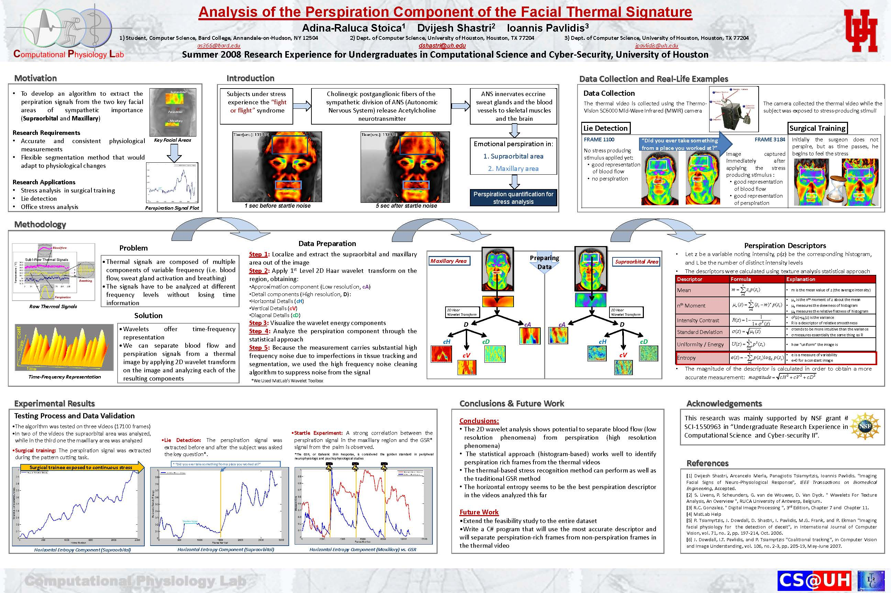

Research > University of Houston
Computational Physiology Lab, Summers 2008 and 2009 In 2008 I participated in UH's REU in Computational Science and Cybersecurity and worked in the Computational Physiology Lab, on stress detection from thermal imaging. My project
was
Analysis of the Blood Perfusion and Perspiration Components of the Supraorbital Thermal Signature, and aimed to help develop a novel stress analysis method using
thermal imaging. For the project, I used various mathematical techniques (wavelet analysis in MATLAB) to measure stress in thermal imaging videos. My work was expanded by researchers in the lab into a full-fledged stress-analysis software program
during the school year.
I returned in 2009 as an intern in the lab, this time working on validating the newly developed algorithm on a set of data. For this project, I analyzed the effectiveness of a novel contact-free emotional perspiration
measurement technology based on thermal imaging for polygraph examinations using the Concealed Information Test. The results showed that the technology was one step closer to being used in practical applications.
The research
poster I made for the REU in 2008 won a university-wide REU competition at the University of Houston. I also presented it at the Bard DSS Poster Session and, by invitation, at the University of Houston Research Day.
